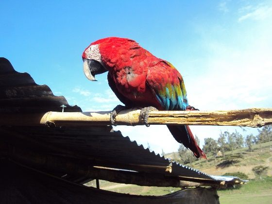
HistoriaCerca de la ciudad
Llacta Sapuy
Asentamiento indígena donde llegó una avanzada de Pizarro el 10 de noviembre de 1532. Hoy, parque municipal con vivero y mini zoológico.
Ideal con niños mientras esperas la misa.
Santa Cruz de Succhabamba · Cajamarca · 2 035 m s. n. m.
El sábado 14 de noviembre de 2026 el Papa vuelve a la provincia que recorrió como obispo de Chiclayo. Esta guía te lleva por su ruta, por la ciudad de la Cruz de Succha y por los caminos de alrededor.
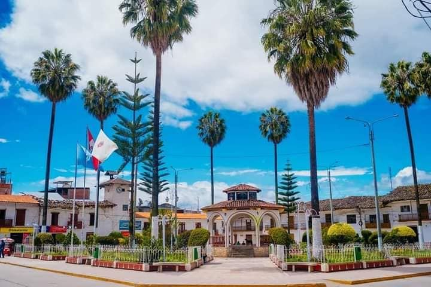
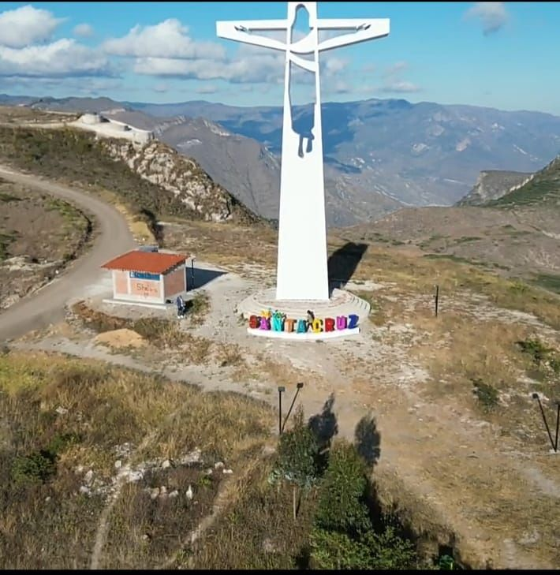
Sábado 14 de noviembre · programa oficial
El día empieza en la catedral de Chiclayo y sube a la sierra por el aire. El tramo en Santa Cruz dura unas tres horas y media; está marcado en dorado.
Esquema, no a escala horizontal. Por tierra el mismo trayecto toma unas 4 horas.
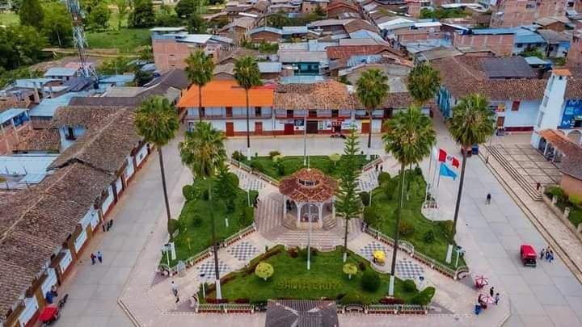
Dónde será la misa
Las autoridades preparan para la misa el antiguo campo de aviación, un terreno de unas 23 hectáreas. En 1938 el aviador Juan Pardo y Miguel aterrizó aquí con su avioneta El Pajarito y propuso la planicie como aeródromo de emergencia. El aeródromo «Leoncio Prado» se inauguró el 27 de setiembre de 1942.
Se esperan entre 100 000 y 200 000 peregrinos en una provincia de unos 35 000 habitantes. Los vecinos están preparando sus casas como hospedaje.
Sigue los accesos y horarios que anuncien las autoridades y la diócesis de Chiclayo; pueden cambiar en los últimos días.
Por qué Santa Cruz
Santa Cruz es parte del departamento de Cajamarca, pero en lo eclesiástico pertenece a la diócesis de Chiclayo. Entre 2014 y 2023 su pastor fue Robert Francis Prevost, agustino, hoy León XIV.
En esos años recorrió los distritos cruceños. Presidió las fiestas del Señor del Costado y de la Virgen de los Remedios, celebró bautizos y confirmaciones, y ordenó sacerdote al actual párroco de la ciudad. Al despedirse prometió volver.
«Prometió volver a Santa Cruz, pero jamás imaginamos que regresaría a su casa como Papa.»P. Wildor Cubas Julca, párroco de Santa Cruz
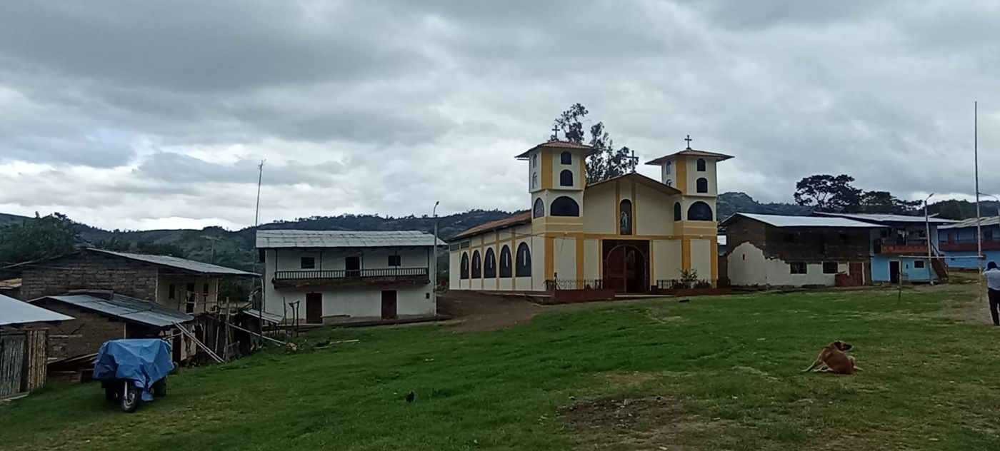
Recorrido a pie · unas 2 horas
El 3 de mayo de 1549, cuenta la tradición, un labriego encontró una cruz de succha (carrizo) en una laguna de la pampa. Santa Cruz de Succhabamba nació donde volvía a aparecer la cruz. Este paseo une sus lugares en el orden en que conviene caminarlos.
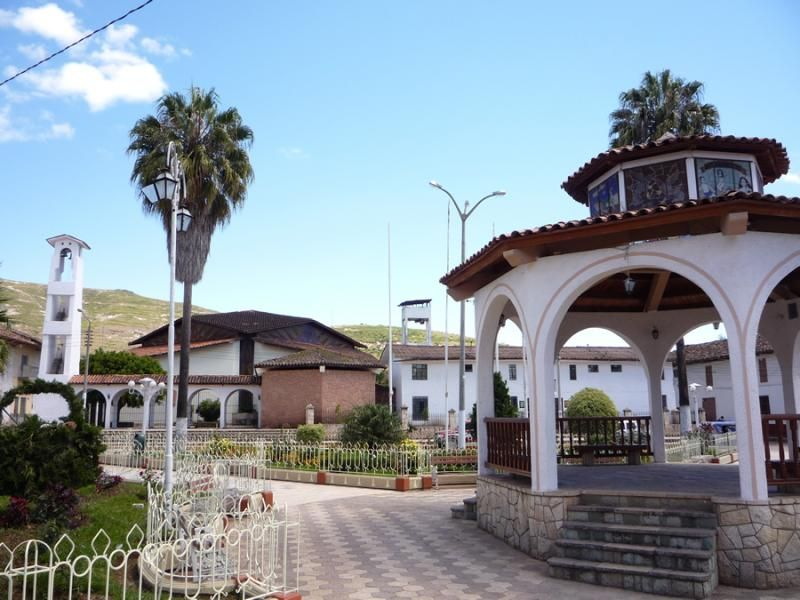
Palmeras, la glorieta y las casonas blancas alrededor. Es el corazón de la fiesta del Señor del Costado y el mejor lugar para orientarte el día que llegues.
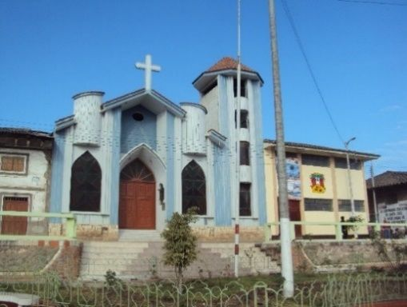
Aquí está el patrón de la ciudad: un Cristo resucitado de cedro, de 1,70 m, que llegó el 28 de setiembre de 1674 en un cajón cargado por una mula sin arriero. Nadie lo reclamó y el pueblo lo hizo suyo.
En el atrio, la Virgen Roja: 2,40 m tallados por la escultora Ana Mescaño en una piedra roja del cerro Cotorumi.
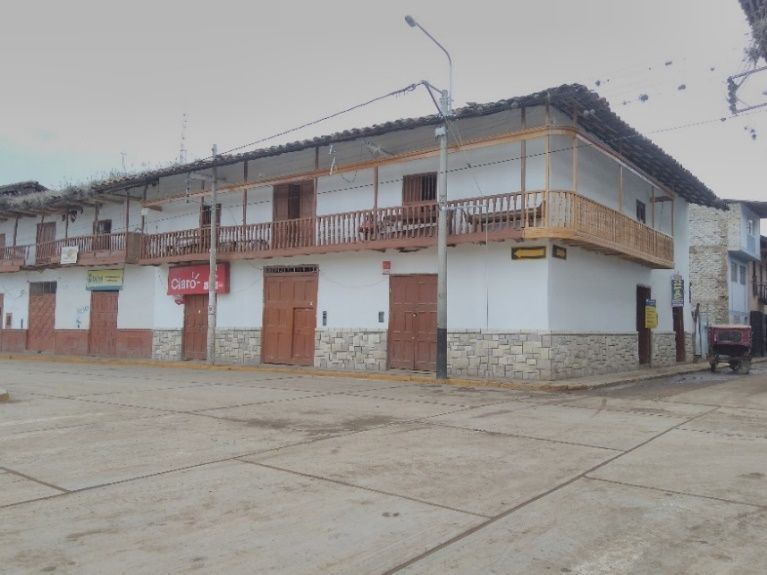
Casonas de adobe con el primer piso de 3 a 4 m, balcones corridos de madera y techos de teja. Zócalos y veredas de piedra blanca del Cotorumi.
La Municipalidad ocupa el antiguo Cabildo de 1801. Mira el reloj de su torre: escribe el cuatro como IIII. Viene de la iglesia colonial demolida hacia 1964.
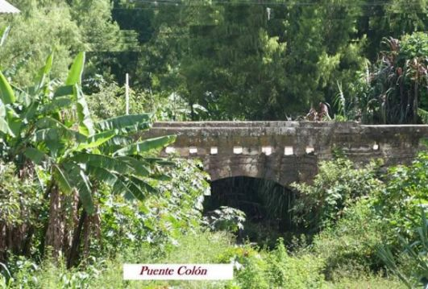
Un arco de piedra blanca sobre la quebrada El Pueblo, al inicio del Jr. Cutervo. Lo levantó el maestro picapedrero Eusebio Bustamante, uniendo las piedras con calicanto: cal, miel y miles de huevos.
Las fuentes locales fechan la obra entre 1935 y 1948. Es el único de su tipo en la provincia.
La réplica de la Cruz de Succha vigila la ciudad desde el cerro de la piedra blanca. Sube al atardecer: verás los techos, el valle y la explanada de la misa.
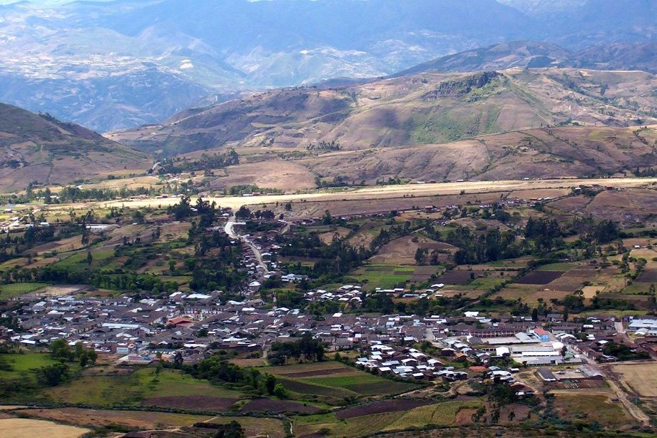
El antiguo campo de aviación, escenario de la misa del 14 de noviembre. Llega temprano, con agua, abrigo para la lluvia y un punto de reencuentro acordado con tu grupo.
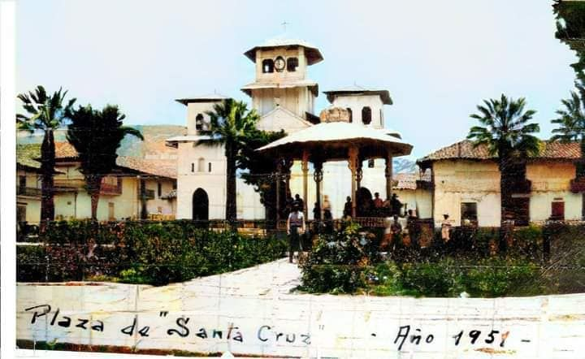
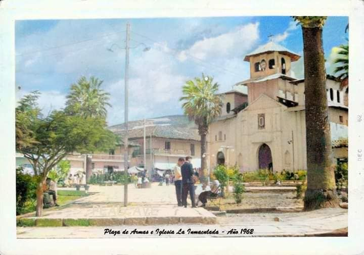
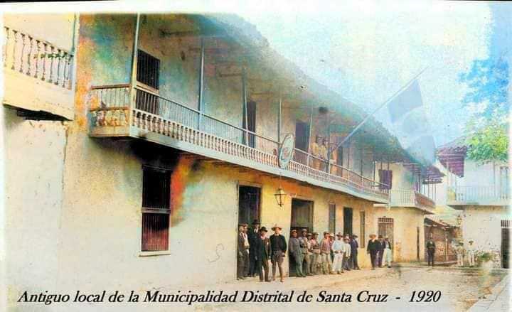
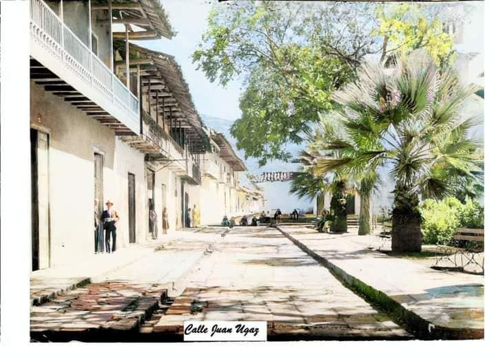
Santo Toribio de Mogrovejo pasa por la aldea y confirma a 332 personas. Otro pastor de la sierra norte, 430 años antes.
Simón Bolívar visita la villa el 12 de diciembre. Muchos cruceños se enrolan en el ejército libertador.
La Ley 11328 crea la provincia de Santa Cruz el 21 de abril, tras más de treinta años de gestiones.
Para quedarte un día más
De los 285 a los 3 600 metros de altitud, once distritos guardan termas, grutas, bosques de neblina y sitios pre incas. Filtra por lo que te interesa.

Asentamiento indígena donde llegó una avanzada de Pizarro el 10 de noviembre de 1532. Hoy, parque municipal con vivero y mini zoológico.
Ideal con niños mientras esperas la misa.
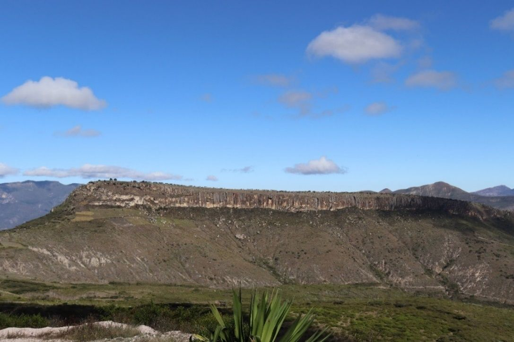
«Cerro alto» en quechua. Pozos rituales tallados en roca, cerámica en la cima y un reloj de piedra cuya sombra marca las 11:00.
Caserío Atumpampa. Terreno privado: pide permiso.
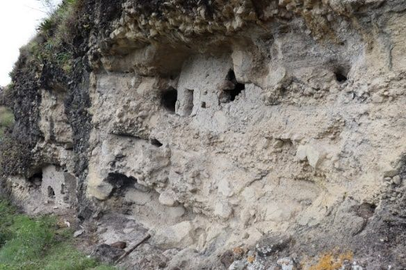
Más de cincuenta nichos funerarios de barro y piedra en los acantilados, cementerios asociados al Hatun Circa.
Muy dañados por huaqueros. Ve con guía y no toques restos.
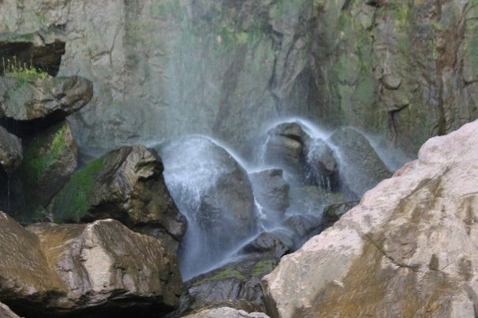
Bosque natural con la catarata Pac Chac, la cueva de los Murciélagos y el puente Priana, arco natural sobre el cañón del Chancay.
Vía a Chota hasta el km 7,5; luego 1,5 km afirmado y 30–40 min a pie.
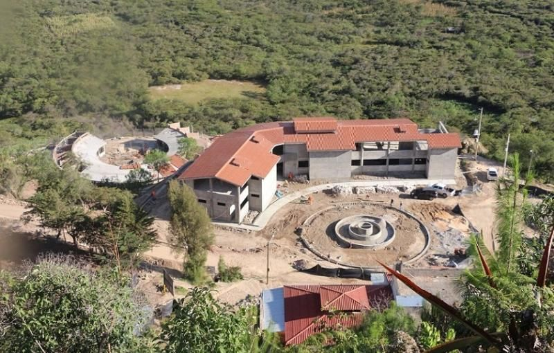
Brotan a 35–40 °C de una falla geológica, en una zona reservada de 2 628 ha. Cerca, las pampas de Montán, donde se dio la batalla de 1882.
Dos piscinas comunitarias y 27 pozos individuales.
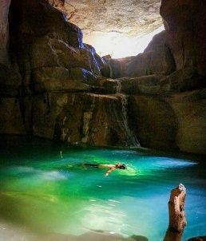
Galerías con lagunas turquesas, el Tragadero o Boca del Diablo y la laguna Santa Lucía. La tradición dice que las visitaron Humboldt y Raimondi.
Solo con guía, casco y linterna.
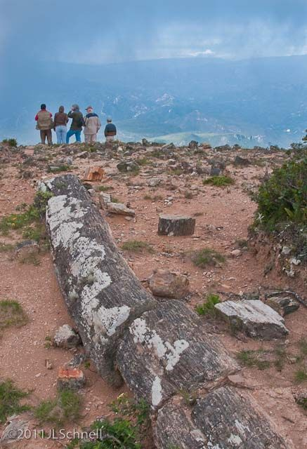
Troncos convertidos en piedra. Patrimonio Cultural de la Nación desde 1997; no hay otra zona de fósiles vegetales así en el Perú.
Llévate solo fotos. En Sexi tejen sombreros de paja.
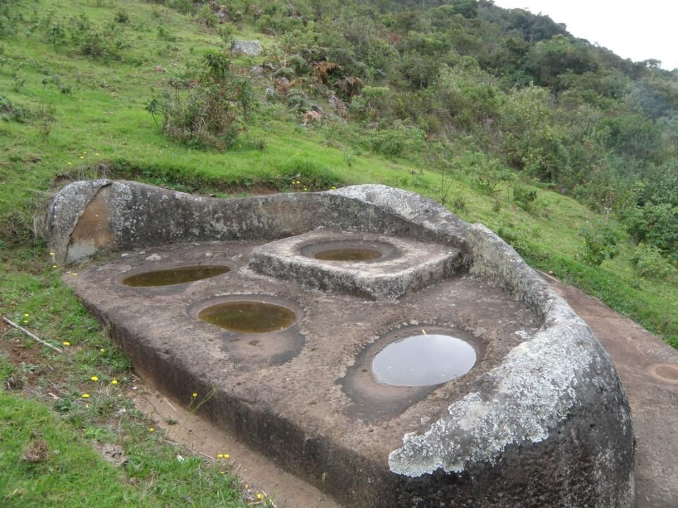
Santuario del culto al agua con altares de piedra y canales. Lo rodean los Bosques Nublados de Udima, 12 183,20 ha con 11 aves endémicas.
Catache celebra a San Agustín, santo de la orden del Papa.
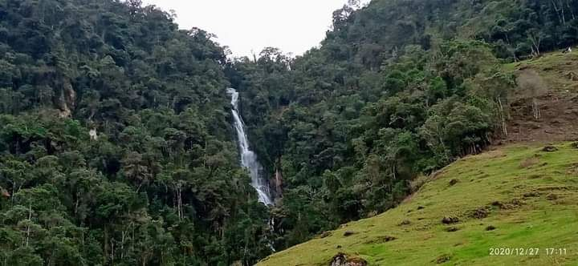
El «distrito de las cataratas» guarda el Santuario de la Virgen de los Remedios, aparecida en un puquio. Los fieles se llevan su agua.
Fiesta del 17 al 21 de noviembre.
Cinco capítulos, 36 páginas, índice, glosario y lista del peregrino. Hojéalo aquí o descárgalo en PDF para leerlo sin conexión en el viaje.
Viaje visual
Toca una foto para verla en grande. Usa las flechas del teclado o desliza para avanzar.
Guía práctica
Desde ChiclayoChiclayo · puente Cumbil · Santa Cruz.
Desde CajamarcaCajamarca · El Empalme · Catilluc · Tongod · Santa Cruz.
Por ChotaCajamarca · Hualgayoc · Chota · Lajas · Santa Cruz.
Tiempos aproximados según Andina. Noviembre es inicio de lluvias en la sierra norte: revisa el estado de la vía antes de salir y llega uno o dos días antes.
0 de 10 listos. Se guarda solo en este dispositivo.
| 14 nov | Visita del Papa León XIV · Santa Cruz |
| 15–27 nov | Sexi · Santa Rosa de Lima |
| 17–21 nov | Liscan, Pulán · Virgen de los Remedios |
| 27 set–2 oct | Santa Cruz · Señor del Costado (día central 28) |
| 29–31 ago | Catache · San Agustín |
| 22–24 set | Uticyacu · Cruz de Jarromayo |
| 13–15 set | Ninabamba · Señor de los Milagros |
| 2–16 jun | Chancay Baños · San Antonio de Padua |
| 3.er jue. ene. | Yauyucán · Corpus Christi |
Fechas del Atlas Arqueológico de M. Centurión Burga. Confírmalas con cada parroquia.
A las 11:00, según el programa oficial publicado por El Peruano. El Papa llega a las 09:50 y se retira a las 13:15.
La oferta hotelera es pequeña. Las autoridades están capacitando a vecinos para recibir peregrinos en sus casas. Reserva cuanto antes o considera dormir en un distrito cercano.
Santa Cruz está a 2 035 m. En noviembre empiezan las lluvias en la sierra norte: lleva poncho, abrigo para la mañana y protección para el sol del mediodía.
Varios están en terrenos privados y sin vigilancia. Ve con un guía local, pide permiso a los propietarios y no muevas piedras ni restos.
Sí: el santuario de Liscan celebra a la Virgen de los Remedios del 17 al 21 de noviembre, y las termas de Chancay Baños son un buen descanso tras la jornada.